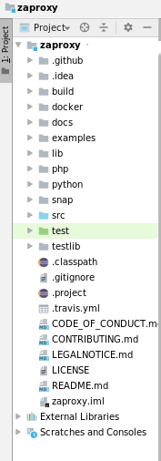
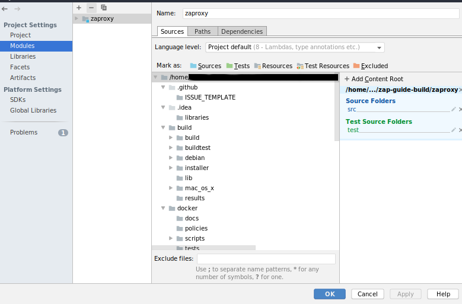
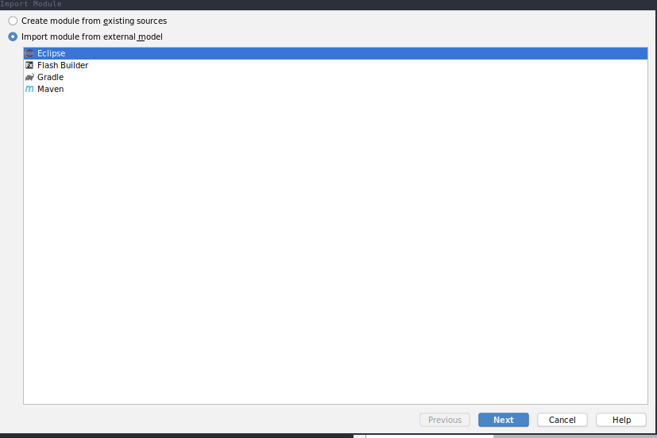

Build ZAP with InteliJ
Build zaproxy (ant-build)
- Start InteliJ and then `Import new project`

- Choose <dir>/zaproxy

- Then choose `Create project from existing sources`

- The `Project location:` project location should be `<dir>/zaproxy`

- At the following windows select `Mark All` and hit `Next`
- `Next`

- `Next`

- Finally, hit `Finish`

- After all you should came up with something like this:

- In turn, Ant build.xml should be added using `Ant build` side panel

- Configure run and debug

Build zap-extensions (gradle-build)
- Build zap
- Go to `File` -> `Project Structure' -> 'Modules` and hit `+` symbol

- Hit `Import module` and select `<dir>/zap-extensions`
- Then select `Import module from external model:` and use `gradle`

- In turn, select `Use default module wrapper (recommended)` and hit `Finish`

- Hit `OK` at `Project Structure` window. That may be take several minutes.
- After all should you be able to access `Gradle` side bar

-
NOTE: In order to run/debug ZAP correctly, the `Use classpath of module:` at `Run/Debug Configurations` should always be selected at `zaproxy` module.

GSoC'19: Accepted!

For the next few days it's community bonding period. I will take advantage of this time to let the community know about my project and it's goals, as well as get a head start on the coding period.
Firstly, I invited in the weekly-meetings of ZAP's core team. As my mentors inform me the team is working on ZAP 2.8.0 release which is going to be released at the following… <period-of-time>.
In reference to my project, until Friday I will publish a new post about WebSocket Passive Scanning. I am planning for the next few days sum up the work I have done before and organize my workflow and timeline. First of all, I am going to focus on PR#1718 which, from my prospective, is close to get merged.
Happy Coding, Happy (GSoC) Summer!
PS: This blog is created with Nikola by using emacs-mode. For more details Fabien Dubosson have written a great guide to integrate Nikola and emacs-mode with github pages
Access to GSoC'2018's blog
In my GSoC'18 blog you can find my previous proposal about WebSocket Active Scanning. There are also information related with ZAP functionality and problems which are faced.